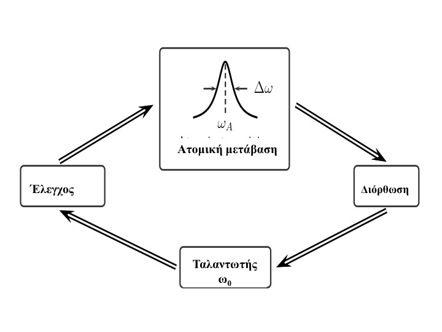
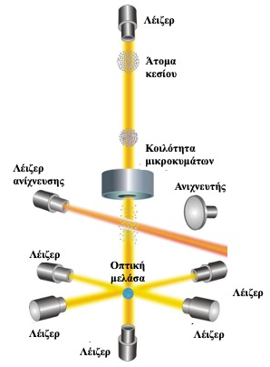
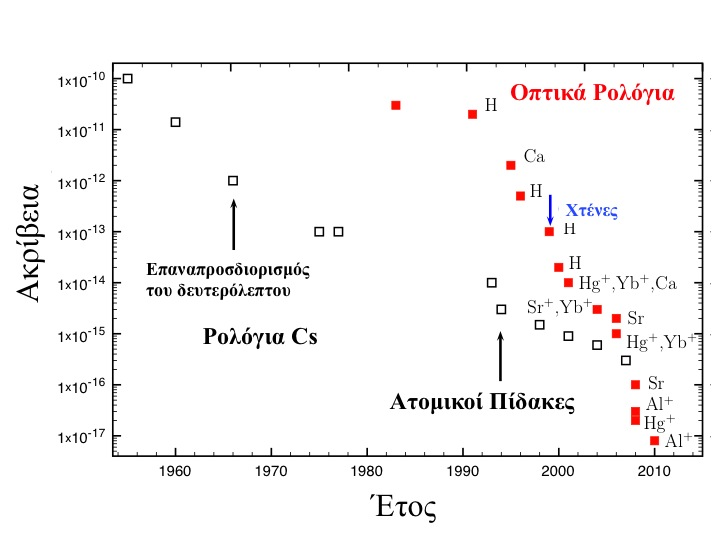

Βασίλης Λεμπέσης
Στο άρθρο αυτό παρουσιάζουμε τους πιο ακριβείς χρονομετρητές: τα ατομικά ρολόγια. Τα μεγάλα θεωρητικά και πειραματικά επιτεύγματα των τελευταίων δεκαετιών στη φυσική των ψυχρών ατόμων έδωσαν τη δυνατότητα κατασκευής ρολογιών όπου η ακρίβεια μέτρησης του χρόνου ξεπερνάει στην κυριολεξία τη φαντασία.
ΕΙΣΑΓΩΓΗ
Το 1978 οι ΗΠΑ εκτόξευαν τον πρώτο από τους είκοσι τέσσερις δορυφόρους ενός τρομερά φιλόδοξου προγράμματος: του Παγκόσμιου Συστήματος Εντοπισμού ή πιο γνωστού από το αγγλικό αρκτικόλεξο GPS (Global Positioning System). Στην «αντίπερα όχθη», στη Σοβιετική Ένωση, το 1982, θα αρχίσει η κατασκευή του Παγκόσμιου Συστήματος Δορυφορικής Πλοήγησης (GLONASS-Global Navigation Satellite System) που είναι το δεύτερο εναλλακτικό σύστημα εντοπισμού με παγκόσμια κάλυψη. Σήμερα τόσο η Ευρώπη όσο και η Κίνα έχουν παρόμοια συστήματα, τα Galileo και BeiDou, αντίστοιχα, ενώ η Ιαπωνία και η Ινδία έχουν αναπτύξει δορυφορικά συστήματα με περιφερειακή κάλυψη. Xάρις σε αυτά τα συστήματα και εξοπλισμένοι με ένα smart phone, μπορείτε, σήμερα, να γνωρίζετε με ακρίβεια λίγων δεκάδων μέτρων τη θέση σας στον πλανήτη.
Πως αυτά τα συστήματα κατορθώνουν να εντοπίζουν τη θέση μας; Η διάταξη των δορυφόρων στο διαστημικό χώρο είναι τέτοια ώστε κάθε σημείο στον πλανήτη να έχει ραδιοφωνική επαφή με έναν συγκεκριμένο ελάχιστο αριθμό δορυφόρων κάθε φορά. Κάθε δορυφόρος εκπέμπει συνεχώς ένα ψηφιακό ραδιοφωνικό σήμα το οποίο περιέχει την πληροφορία για τη θέση του και το χρόνο με ακρίβεια ενός δισεκατομμυριοστού του δευτερόλεπτου. Ένας δέκτης στη Γη συλλέγει αυτές τις πληροφορίες από τους δορυφόρους και τις χρησιμοποιεί για να υπολογίσει τη θέση του με ακρίβεια μερικών δεκάδων μέτρων. Ο δέκτης συγκρίνει τον δικό του χρόνο με τον χρόνο που του στέλνει ο δορυφόρος και χρησιμοποιεί την διαφορά τους για να υπολογίσει την απόστασή του από το δορυφόρο. Στην συνέχεια συγκρίνει τον χρόνο του με τον χρόνο κάποιων δορυφόρων των οποίων η θέση είναι γνωστή. Από αυτή την σύγκριση ο δέκτης μπορεί να υπολογίσει τον γεωγραφικό του μήκος και πλάτος καθώς και το ύψος του, από την επιφάνεια της θάλασσας, εάν πρόκειται για ιπτάμενο αντικείμενο. Από τα παραπάνω είναι φανερό πως η ακρίβεια εντοπισμού είναι άρρηκτα συνδεδεμένη με την ακρίβεια μέτρησης του χρόνου. Γι΄αυτό τόσο οι δορυφόροι όσο και ο δέκτης πρέπει να είναι εξοπλισμένοι με ρολόγια πολύ υψηλής ακρίβειας. Αυτό τον ρόλο φέρουν σε πέρας τα ατομικά ρολόγια, οι ακριβέστεροι χρονομέτρες που έχει στη διάθεσή του σήμερα ο άνθρωπος.
ΟΙ ΠΡΩΤΟΠΟΡΟΙ
Ο πρώτος που αντιλήφθηκε πως τα άτομα θα πρέπει να ληφθούν ως η βάση για τη δημιουργία αξιόπιστών συστημάτων μέτρησης των φυσικών μεγεθών ήταν ο J. C. Maxwell o ο οποίος στο τέλος της Πραγματείας του παρατήρησε πως:
Στην παρούσα κατάσταση της επιστήμης το πιο καθολικό πρότυπο μήκους που θα μπορούσαμε να υποθέσουμε ότι είναι το μήκος κύματος στο κενό ενός συγκεκριμένου είδους φωτός, που εκπέμπεται από κάποιες ευρέως διαδεδομένες ουσίες όπως το νάτριο, το οποίο έχει σαφώς καθορισμένες γραμμές μέσα στο φάσμα του. Ένα τέτοιο πρότυπο θα ήταν ανεξάρτητο από τυχόν αλλαγές στις διαστάσεις της γης, και θα πρέπει να υιοθετηθεί από εκείνους που προσδοκούν τα γραπτά τους να είναι πιο μόνιμα από εκείνο το σώμα. Η μονάδα χρόνου που υιοθετείται σε όλες τις φυσικές έρευνες είναι το ένα δευτερόλεπτο του μέσου ηλιακού χρόνου. Μια πιο καθολική μονάδα χρόνου μπορεί να βρεθεί λαμβάνοντας τον περιοδικό χρόνο ταλάντωσης του συγκεκριμένου είδους φωτός του οποίου το μήκος κύματος είναι η μονάδα μήκους.
Η πρόταση για χρήση ατόμων ως μετρητών του χρόνου είχε διατυπωθεί σε εντελώς ανύποπτο χρόνο από τον Λόρδο Κέλβιν το 1879 (Thomson, 1879).
Οι πρόσφατες ανακαλύψεις λόγω της κινητικής θεωρίας των αερίων και της ανάλυσης φάσματος (ειδικά όταν αυτή εφαρμόζεται στο φως των ουράνιων σωμάτων) μας υποδεικνύουν φυσικά πρότυπα υλικά σώματα όπως άτομα υδρογόνου ή νατρίου, διαθέσιμα σε τεράστιες ποσότητες, όλα απολύτως όμοια σε κάθε φυσική ιδιότητα. Ο χρόνος ταλάντωσης ενός ατόμου νατρίου είναι γνωστό ότι είναι απολύτως ανεξάρτητος από τη θέση του στο σύμπαν και πιθανότατα θα παραμείνει ο ίδιος όσο υπάρχει το ίδιο το σωματίδιο.
Οι έρευνες όμως που οδήγησαν στην κατασκευή των ατομικών ρολογιών είχαν εντελώς διαφορετική αφετηρία που δεν είχε σχέση με την χρονομέτρηση. Το έναυσμα δόθηκε από τη Γενική Θεωρία της Σχετικότητας (ΓΘΣ) και συγκεκριμένα από την πρόβλεψή της για την, περίφημη, βαρυτική μετατόπιση της συχνότητας προς το ερυθρό. Πρόκειται για την μείωση της συχνότητας του φωτός όταν αυτό βρίσκεται μέσα σε ένα εξαιρετικά ισχυρό βαρυτικό πεδίο. Η μεταβολή αυτή, στο βαρυτικό πεδίο της Γης, είναι εξαιρετικά μικρή σε μέγεθος ώστε να μπορεί να μετρηθεί με συμβατικά ρολόγια. Για παράδειγμα ένα ρολόι κρυστάλλων χαλαζία έχει μια απώλεια του ενός χιλιοστού του δευτερολέπτου ανά ημέρα. Σύμφωνα με τη Γενική Θεωρία της Σχετικότητας ένα ρολόι στην κορυφή των Ιμαλαΐων τρέχει πιο γρήγορα κατά τριάντα εκατομμυριοστά του δευτερολέπτου σε σχέση με ένα όμοιο ρολόι στην επιφάνεια της θάλασσας.
Η πρώτη ουσιαστική προσπάθεια για την κατασκευή ενός ατομικού ρολογιού έγινε το 1930, στο Πανεπιστήμιο Columbia των Η.Π.Α, από τον Ι. Rabi και τους φοιτητές του οι οποίοι μελετούσαν κάποιες θεμελιώδεις ιδιότητες των ατόμων και των πυρήνων (Rabi, 1945). Στην προσπάθειά τους αυτή, ανακάλυψαν μια τεχνική, γνωστή ως Πυρηνικός Μαγνητικός Συντονισμός (NMR), που την χρησιμοποιούμε σήμερα στις μαγνητικές τομογραφίες της ιατρικής. Με αυτήν την τεχνική μπόρεσαν να μετρήσουν τις συχνότητες των ηλεκτρονιακών μεταβάσεων σε άτομα. Για αυτήν την ανακάλυψη ο Rabi τιμήθηκε με το βραβείο Νόμπελ το 1944. Ο Rabi υποστήριξε τότε την ιδέα πως, η ποιότητα και η ακρίβεια αυτών των μετρήσεων θα μπορούσε να μας οδηγήσει στην κατασκευή ενός ατομικού ρολογιού. Ο ίδιος δεν προχώρησε αυτήν την ιδέα αλλά, το 1949, ένας μαθητής του, ο Ν. Ramsey, θα βελτιώσει κατά πολύ τις τεχνικές του δασκάλου του και θα τιμηθεί για αυτό το επίτευγμα με το βραβείο Νόμπελ στη φυσική το 1989. Για την ιστορία –και όχι μόνο- πρέπει να αναφέρουμε ότι ο Rabi, που είχε εμπλακεί στην κατασκευή της ατομικής βόμβας, σε βαθύ γήρας έθεσε την υπογραφή του μαζί με άλλους κορυφαίους Aμερικανούς επιστήμονες σε κείμενο-έκκληση ενάντια στο ψυχροπολεμικό πρόγραμμα του Πολέμου των Άστρων.
Το πρώτο ατομικό ρολόι κατασκευάστηκε από τον H. Lyons το 1949 στο Εθνικό Γραφείο Προτύπων των Η.Π.Α. (National Bureau of Standards, NBS σήμερα γνωστό ως National Institute of Standards and Technology, NIST ). Η λειτουργία του βασιζόταν σε μεταβάσεις ηλεκτρονίων στο μόριο της αμμωνίας (Sullivan, 2001). Αυτό το ατομικό ρολόι, ωστόσο, δεν μπορούσε να φτάσει την ακρίβεια των καλύτερων ρολογιών χαλαζία της εποχής και η αμμωνία εγκαταλείφθηκε όταν έγινε σαφές ότι τα ρολόγια καισίου θα παρήγαγαν καλύτερα αποτελέσματα. Στα μέσα της δεκαετίας του 1950 οι L. Essen και J. Parry, στο Εθνικό Εργαστήριο της Μεγάλης Βρετανίας (Britain’s National Laboratory, BNL σήμερα γνωστό ως National Physical Laboratory, NPL), κατασκεύασαν ένα ατομικό ρολόι το οποίο βασιζόταν σε μεταβάσεις ηλεκτρονίων του ατόμου του κεσίου-133 (Essen, 1955). Το μειονέκτημα αυτού του ρολογιού ήταν ο τεράστιος χώρος που καταλάμβαναν τα απάρτια που απαιτούνταν για την κατασκευή του. H διάταξη αυτή δεν λειτούργησε ποτέ ως ρολόι ούτε καν σαν βρόγχος ανατροφοδότησης (όπως θα δούμε παρακάτω). Παρόλα αυτά στη βιβλιογραφία αναφέρεται ως το πρώτο ατομικό ρολόι καθώς η συχνότητα 9.192.631.770 Hz της μετάβασης ανάμεσα σε δύο καταστάσεις της υπέρλεπτης υφής (F=3 και F=4) της θεμελιώδους κατάστασης 6s2S1/2 του ατόμου του κεσίου, την οποία χρησιμοποίησαν σε αυτό το «ρολόι», υιοθετήθηκε από το Γενικό Συνέδριο Μέτρων και Σταθμών και παραμένει και σήμερα η βάση ορισμού του δευτερόλεπτου στο Διεθνές Σύστημα Μονάδων (SI) (Markowitch et al., 1958).
Την ίδια περίοδο, ένας άλλος συνεργάτης του Rabi, o J. Zacharias, κατόρθωσε να κατασκευάσει ένα μικρό φορητό ατομικό ρολόι και το 1956, σε συνεργασία με την εταιρεία National Company στο Malden της Mασσαχουσέτης, προχώρησε στην κατασκευή το πρώτου εμπορικού ατομικού ρολογιού με την επωνυμία Atomichron. Είχε προηγηθεί η ανεπιτυχής προσπάθειά του για την κατασκευή ενός ρολογιού ατομικού πίδακα, την σύγχρονη εκδοχή του οποίου περιγράφουμε παρακάτω. Ο Zacharias είχε την ευφυή σκέψη πως η εκτόξευση κατακόρυφα προς τα πάνω μιας δέσμης ατόμων κεσίου θα οδηγούσε στην επιβράδυνση των ατόμων, εξαιτίας της βαρύτητας, και αυτό θα έλυνε πολλά τεχνικά προβλήματα. Τα άτομα όμως εξέρχονται από ένα φούρνο (θερμοκρασίας 400 Κ) χαρακτηριζόμενα από μια θερμική κατανομή ταχυτήτων με μια πιο πιθανή τιμή γύρω στα 300 m/s. Η πιθανότητα να υπάρχουν άτομα με ταχύτητες γύρω στα 10 m/s είναι περίπου 10-6 αυτής των 300 m/s. Αυτό το γεγονός και μόνο κατέστησε τις προσπάθειες του Zacharias ατελέσφορες. Η ιστορία των ατομικών ρολογιών από την αρχική σύλληψη έως την πρώτη εμπορική τους έκδοση έχει παρουσιαστεί από τον κορυφαίο ιστορικό της επιστήμης P. Forman σε ένα άρθρο του το 1985 (Forman, 1985)
Η ΑΡΧΗ ΛΕΙΤΟΥΡΓΙΑΣ
Όλα τα ρολόγια μέχρι σήμερα στηρίζονται στην ταλάντωση ενός φυσικού συστήματος είτε αυτή είναι η περιστροφή της Γης γύρω από τον εαυτό της, είτε η ταλάντωση ενός εκκρεμούς ή, ακόμη, οι ηλεκτρομηχανικές ταλαντώσεις ενός κρυστάλλου χαλαζία. Όπως γνωρίζουμε σε ένα άτομο τα ηλεκτρόνια διατάσσονται σε συγκεκριμένες ενεργειακές στάθμες γύρω από τον πυρήνα. Ένα ηλεκτρόνιο, ευρισκόμενο σε μια στάθμη μπορεί, απορροφώντας ένα φωτόνιο συγκεκριμένης συχνότητας, να μεταβεί σε μια υψηλότερη ενεργειακή στάθμη και από εκεί, εκπέμποντας ένα φωτόνιο της ίδιας συχνότητας, να επιστρέψει πάλι στην αρχική του στάθμη. Αυτή η μετάβαση διαρκεί συγκεκριμένο χρόνο και, εάν εμείς διεγείρουμε διαρκώς το άτομο εξωτερικά με χρήση κατάλληλων ηλεκτρομαγνητικών πεδίων, αποτελεί το κατάλληλο περιοδικό φαινόμενο που απαιτείται για την λειτουργία του ατομικού ρολογιού.
Τα άτομα δεν είναι τόσο πολύπλοκα όσο οι μηχανικοί ταλαντωτές. Η χρήση των ατόμων ως πρότυπα συχνότητας και χρόνου έχει σημαντικά πλεονεκτήματα έναντι της χρήσης μακροσκοπικών ταλαντωτών για δύο λόγους. Πρώτον, οι μεταπτώσεις ηλεκτρονίων μεταξύ των διαφόρων ατομικών σταθμών είναι πανομοιότυπες ως προς τα φυσικά τους χαρακτηριστικά σε όλα τα άτομα του ίδιου χημικού στοιχείου. Πράγματι, η διάρκεια ζωής ενός ατόμου είναι μεγαλύτερη από 1025 s, ένα χρονικό διάστημα πολύ μεγαλύτερο από την αναμενόμενη διάρκεια ζωής του Σύμπαντος, η οποία έχει υπολογιστεί στα 1010 s. Δεύτερον, σε αντίθεση με τις μηχανικές συσκευές, τα άτομα δεν υπόκεινται σε φθορές, επομένως οι ιδιότητές τους δεν αλλάζουν με την πάροδο του χρόνου. Ένας μακροσκοπικός ταλαντωτής υφίσταται παραμόρφωση υλικού κατά τη λειτουργία του, οδηγώντας σε αλλαγές στην περίοδο ταλάντωσης καθώς περνά ο καιρός. Ωστόσο, ένας συνήθης ταλαντωτής που είναι πλήρως απομονωμένος από εξωτερικές αλληλεπιδράσεις, χωρίς η διαδικασία της μέτρησης να του προκαλεί φθορές, θα αποτελούσε ένα «τέλειο» χρονόμετρο.
Η ακρίβεια ενός ατομικού ρολογιού εξαρτάται κυρίως από τρεις παράγοντες. Πρώτα από τη θερμοκρασία των ατόμων, γιατί όσο πιο χαμηλή είναι, τόσο πιο αργά κινούνται τα άτομα άρα τόσο πιο μεγάλος είναι ο χρόνος στον οποίο αλληλεπιδρούμε με αυτά. Δεύτερον, από τη συχνότητα των εκπεμπόμενων φωτονίων κατά τη μετάβαση των ηλεκτρονίων από τη διεγερμένη στη θεμελιώδη στάθμη. Αυτό γιατί όσο μεγαλύτερη είναι η συχνότητα της βασικής ταλάντωσης ενός ρολογιού, τόσο μεγαλύτερη είναι η ακρίβεια με την οποία μετράμε τον χρόνο. Τέλος, η ακρίβεια ενός ατομικού ρολογιού εξαρτάται και από την ενεργειακή «στενότητα» της διεγερμένης στάθμης. Όπως προβλέπει η κβαντική μηχανική η χρονική διάρκεια Δτ μιας μετάβασης και το ενεργειακό της εύρος ΔΕ συνδέονται από την σχέση αβεβαιότητας ΔΕΔτ ≥ ħ (όπου ħ η ανηγμένη σταθερά του Planck, ħ=h/2π) . Από τη σχέση αυτή είναι προφανές πως όταν η χρονική διάρκεια Δτ είναι μεγάλη το ενεργειακό εύρος ΔΕ είναι μικρό («στενό») άρα και η συχνότητα του εκπεμπόμενου φωτονίου είναι καθορισμένη με μεγαλύτερη ακρίβεια.
Τα ατομικά ρολόγια της πρώτης γενιάς αξιοποιούσαν κυρίως ηλεκτρομαγνητικές ακτινοβολίες στην περιοχή των μικροκυμάτων. Για να κατασκευάσουμε ατομικά ρολόγια μεγαλύτερης ακρίβειας θα χρειαστεί να στραφούμε προς τις υψηλότερες συχνότητες, όπως αυτές του ορατού (οπτικού) τμήματος του ηλεκτρομαγνητικού φάσματος. Σήμερα η έρευνα εστιάζεται στην κατασκευή οπτικών ατομικών ρολογιών. Το πρώτο τέτοιο ρολόι, που σχεδιάστηκε και κατασκευάστηκε στο NIST το 2001 από την ερευνητική ομάδα του D. J. Wineland, βασίστηκε σε ένα μεμονωμένο παγιδευμένο ιόν υδραργύρου (Diddams, 2001). Σε αυτή την κατηγορία ατομικών ρολογιών ο «ταλαντωτής» είναι το περιοδικό ηλεκτρομαγνητικό πεδίο μιας δέσμης λέιζερ. Η συχνότητα των λέιζερ είναι αρκετά σταθερή, αλλά σιγά-σιγά μεταβάλλεται λόγω διαφόρων επιδράσεων από το περιβάλλον. Εμείς προσπαθούμε να «κλειδώσουμε» τη συχνότητά του λέιζερ σε μια «απόλυτη» συχνότητα αναφοράς, αυτήν μιας ατομικής μετάβασης. Για το σκοπό αυτό κατευθύνουμε ένα μέρος της δέσμης λέιζερ σε ένα σύνολο ατόμων ή σε ένα μεμονωμένο ιόν, φροντίζoντας ώστε η συχνότητα του λέιζερ να είναι συντονισμένη με μια ατομική μετάβαση. Τα άτομα απορροφούν το φως του λέιζερ και διεγείρονται. Στη συνέχεια κατασκευάζουμε ένα βρόχο ανάδρασης με βάση την ατομική απόκριση με τον οποίο «κρατάμε» τη συχνότητα του λέιζερ σταθερή ως προς αυτήν της ατομικής συχνότητας μετάβασης. Το αποτέλεσμα είναι μια εξαιρετικά σταθερή και καλά καθορισμένη συχνότητα εξόδου για τη δέσμη του λέιζερ (Εικ.1).

Εικ. 1: Σχηματική αναπαράσταση των βασικών σταδίων λειτουργίας ενός ατομικού ρολογιού (Cohen-Tannoudji & Guéry-Odelin, 2011, σ.438).
.
ΤΟ ΡΟΛΟΪ ΑΤΟΜΙΚΟΥ ΠΙΔΑΚΑ
Όπως αναφέραμε παραπάνω η πρώτη προσπάθεια κατασκευής ενός ρολογιού ατομικού πίδακα έγινε από τον Zacharias ενώ το 1982 είχαμε μια πιο σύγχρονη εκδοχή αυτού του ρολογιού (De Marchi, 1982). Η αιτία της αποτυχίας αυτών των ατομικών ρολογιών ήταν πως ο πίδακας ατόμων ήταν με τη μορφή θερμικής δέσμης όπου τα περιζήτητα βραδέως κινούμενα άτομα είναι πολύ λίγα σε ποσοστό με αποτέλεσμα το σήμα που λάμβαναν οι πειραματιστές να ήταν αρκετά ασθενές.
Την λύση σε αυτό το πρόβλημα έδωσαν οι νέες τεχνικές παγίδευσης και επιβράδυνσης της κίνησης των ατόμων και ιδιαίτερα η επίτευξη της οπτικής μελάσας (optical molasse) (Lembessis, 2020). Πρόκειται για ένα βραδυκίνητο μόρφωμα ατόμων (από όπου προέρχεται και το όνομα) το οποίο, για παράδειγμα, στην περίπτωση του κεσίου, αποτελείται από περίπου δέκα εκατομμύρια άτομα, με μέση ταχύτητα 1 cm/s. To μόρφωμα αυτό έχει μέγεθος λίγα χιλιοστά.
Η αρχή λειτουργίας φαίνεται στο σχήμα της Εικ.2. Τρία ζεύγη δεσμών λέιζερ χρησιμοποιούνται για την παρασκευή της οπτικής μελάσας. Στη συνέχεια ρυθμίζοντας τις συχνότητες των δύο κατακόρυφων δεσμών λέιζερ το μόρφωμα της οπτικής μελάσας εκτοξεύεται κατακόρυφα προς τα πάνω. Κατά τη διάρκεια της κίνησης του διαστέλλεται διαρκώς. Κατά την φάση της ανόδου καθώς και της καθόδου διέρχεται δύο φορές από το εσωτερικό μιας ηλεκτρομαγνητικής κοιλότητας μικροκυμάτων. H κοιλότητα αυτή παρέχει μικροκύματα με συχνότητα πολύ κοντά σε αυτήν των φωτονίων που εκπέμπονται σε μια συγκεκριμένη μετάβαση της υπέρλεπτης υφής του ατόμου του κεσίου. Η συχνότητα αυτών των μικροκυμάτων μεταβάλλεται διαρκώς μέχρι να επιτευχθεί συντονισμός με τις καταστάσεις του κεσίου. Ακριβώς κάτω από την κοιλότητα βρίσκεται μια άλλη διάταξη λέιζερ η οποία διεγείρει τα άτομα ωθώντας τα σε φθορισμό. Από το σήμα του φθορισμού παίρνουμε πληροφορία για τον αριθμό των ατόμων που έχουν διεγερθεί. Ένας βρόγχος ανατροφοδότησης προσαρμόζει την συχνότητα μικροκυμάτων ώστε να διατηρείται ο συντονισμός. Αυτή η συχνότητα είναι που ορίζει το δευτερόλεπτο στα ατομικά ρολόγια. Το ατομικό ρολόι δίνει ένα συνεχές σήμα συχνότητας που χρησιμοποιείται για τον ορισμό του δευτερολέπτου. Μετρώντας κύκλους αυτού του σήματος μπορούμε με ακρίβεια να μετρήσουμε χρονικά διαστήματα.

Εικ. 2. Το ρολόι του ατομικού πίδακα.
ΝΕΕΣ ΔΥΝΑΤΟΤΗΤΕΣ ΚΑΙ ΠΡΟΚΛΗΣΕΙΣ
Η ανάπτυξη των οπτικών κρυστάλλων ατόμων [1](optical lattices) έχει ανοίξει νέες προοπτικές στην βελτίωση της απόδοσης των ατομικών ρολογιών. Τα πρώτα ατομικά ρολόγια είτε είχαν βασιστεί σε μεμονωμένα παγιδευμένα ιόντα ή σε σύνολα εκατομμυρίων ψυχρών ατόμων που είχαν επιβραδυνθεί από δέσμες λέιζερ. Στην πρώτη περίπτωση είχαμε το μειονέκτημα του ασθενούς σήματος. Στην δεύτερη περίπτωση, λόγω του μεγάλου αριθμού ατόμων, λαμβάναμε μεν σήμα αυξημένης έντασης αλλά είχαμε το πρόβλημα με τη επίδραση του φαινόμενου Doppler[2]. Οι οπτικοί κρύσταλλοι ατόμων, συνδυάζουν τα πλεονεκτήματα και των δύο περιπτώσεων (Oats, 2015). Με το να συγκρατούν ένα σημαντικό αριθμό ατόμων σε κάθε παγιδευτική θέση βελτιώνουν την ένταση του σήματος. Έπειτα, επειδή πρακτικά τα παγιδευμένα άτομα είναι ακίνητα, αποφεύγουμε προβλήματα που σχετίζονται με την επίδραση του φαινόμενου Doppler. Τέλος, σε έναν οπτικό κρύσταλλο τα άτομα παραμένουν παγιδευμένα περισσότερο από ένα δευτερόλεπτο (ποσό τεράστιο για τις ατομικές κλίμακες) οπότε η μέτρηση των ηλεκτρονιακών «τικ» του ατομικού ρολογιού (που διαρκούν περίπου ένα εκατομυριοστό του δευτερόλεπτου) μπορεί να γίνει με πολύ υψηλή ανάλυση. Με τα ατομικά ρολόγια οπτικών κρυστάλλων η ακρίβεια μέτρησης του χρόνου έχει φτάσει στο επίπεδο του 10-18.
Το πρώτο ρολόι οπτικού κρυστάλλου ατόμων, το οποίο βασίστηκε σε παγιδευμένα άτομα στρόντιου, κατασκευάστηκε το 2003 στο Πανεπιστήμιο του Τόκιο (Takamoto, 2005). Στη συνέχεια ακολούθησαν παρόμοια ρολόγια στρόντιου στο JILA του Κολοράντο και στο Systèmes de Référence Temps-Espace στο Παρίσι. Στο Εθνικό Ινστιτούτο Προτύπων και Τεχνολογίας (NIST) των ΗΠΑ παρουσιάστηκε ένα ρολόι οπτικού κρυστάλλου με βάση το υττέρβιο (στοιχείο των σπάνιων γαιών). Τα τελευταία χρόνια έχουν γίνει αξιοσημείωτα βήματα στην κατασκευή τέτοιων ρολογιών χρησιμοποιώντας άτομα υδράργυρου και μαγνήσιου. Το 2024 ανακοινώθηκε η κατασκευή του πιο ακριβούς ρολογιού οπτικού κρυστάλλων ατόμων στο JILA του Colorado. To ρολόι αυτό αξιοποίησε άτομα στρόντιου και έφτασε σε ακρίβεια 8.1×10-19 (Aeppli et al., 2024). Ένα πλήθος από ρολόγια οπτικών κρυστάλλων είναι τώρα υπό κατασκευή σε όλο τον κόσμο, ενώ ακόμη περισσότερα βρίσκονται στο στάδιο του σχεδιασμού.

Εικ. 3. Χρονολογική εξέλιξη των διαφόρων τύπων ατομικών ρολογιών και της σχετικής τους ακρίβειας (Cohen-Tannoudji & Guéry-Odelin, 2011, σ.468).
Ένα από τα πιο σημαντικά προβλήματα σε ένα ατομικό ρολόι οπτικού πλέγματος είναι η σωστή επιλογή των ατομικών σταθμών. Ο λόγος είναι πως το ίδιο το φως του πλέγματος που παγιδεύει τα άτομα μεταβάλλει ταυτόχρονα την ενέργεια αυτών των σταθμών. Αυτό έχει ως συνέπεια την μεταβολή της συχνότητας των μεταβάσεων των ηλεκτρονίων. Η λύση είναι να χρησιμοποιηθούν μεταβάσεις τέτοιες που οι μεταβολές, στη θεμελιώδη και στη διεγερμένη στάθμη να είναι ίσες. Με αυτόν τον τρόπο η ενεργειακή διαφορά μεταξύ των σταθμών παραμένει η ίδια. Για αυτό το σκοπό κατάλληλο είναι το άτομο του στρόντιου του οποίου η ηλεκτρονιακή δομή μας παρέχει τέτοιες μεταβάσεις. Οι μεταβάσεις που χρειάζονται σε ένα ατομικό ρολόι πρέπει, επίσης, να έχουν πολύ μικρή εξάρτηση από την πόλωση του φωτός του οπτικού πλέγματος κάτι που είναι ένας πραγματικός «πονοκέφαλος» για τους πειραματικούς φυσικούς.
Εκτός από τα ρολόγια ατομικών κρυστάλλων στα οποία εμπλέκεται ένας πολύ μεγάλος αριθμός ατόμων υπάρχουν και ρολόγια που λειτουργούν με μεμονωμένα ατομικά σωματίδια και συγκεκριμένα με ιόντα. Σε αυτήν την περίπτωση ένα ιόν παγιδεύεται από μια διάταξη ηλεκτρομαγνητικών πεδίων και στη συνέχεια αλληλεπιδρά με ένα λέιζερ που διεγείρει μια ατομική μετάβαση. Προς το παρόν, το πιο ακριβές από αυτά τα ρολόγια (9.4×10-19) χρησιμοποιεί ένα ιόν αλουμινίου Al⁺, (Brewer et al., 2023). Ωστόσο, στον αγώνα για έναν πρακτικό και εύκολα αναπαραγώγιμο νέο ορισμό του δευτερολέπτου, το ελαφρώς λιγότερο τέλειο αλλά πολύ πιο πρακτικό ρολόι ιόντων υττέρβιου Yb⁺ (Tofful et al., 2024) έχει πρωτοστατήσει τα τελευταία χρόνια. Οι δύο τεχνολογίες συνεχίζουν να εξελίσσονται παράλληλα, με το Al⁺ να διευρύνει τα όρια του τι είναι ουσιαστικά εφικτό και το Yb⁺ να επιδεικνύει τι είναι λειτουργικά εφικτό.
Τα ρολόγια ενός ιόντος αποφεύγουν τον θόρυβο που εισάγουν οι κρύσταλλοι ατόμων σε ένα σύστημα καθώς διακρίνονται για την ιδιαίτερα χαμηλή ευαισθησία τους σε εξωτερικά πεδία και στο περιβάλλον. Τα ρολόγια οπτικών κρυστάλλων ατόμων, ωστόσο, εξετάζουν χιλιάδες άτομα ταυτόχρονα, βελτιώνοντας την ακρίβεια. Οι δύο αυτοί διαφορετικοί τύποι ρολογιών εναλλάσσουν την πρώτη θέση στην ακρίβεια μέτρησης του χρόνου τις τελευταίες δύο δεκαετίες.
Για να πετύχουμε όσο το δυνατόν υψηλότερη ακρίβεια στη λειτουργία των ατομικών ρολογιών οφείλουμε να λάβουμε υπόψη και τα συστηματικά σφάλματα που υπεισέρχονται στη λειτουργία τους. Στα ατομικά ρολόγια οπτικών κρυστάλλων η πιο σημαντική πηγή συστηματικών σφαλμάτων είναι οι κρούσεις μεταξύ των ατόμων, που στην περίπτωση μεγάλου αριθμού ατόμων είναι πολύ σημαντικές. Ένας τρόπος να απαλλαγούμε από αυτές είναι η χρήση ισοτόπων των ατόμων που είναι φερμιόνια. Σε χαμηλές θερμοκρασίες, οι κρούσεις μεταξύ των φερμιονίων είναι σχεδόν αμελητέες. Ανάμεσα στα άλλα συστηματικά σφάλματα που υπεισέρχονται στην λειτουργία των ατομικών ρολογιών είναι οι ατέλειες στην περιοδική δομή του οπτικού κρυστάλλου καθώς και η υπέρυθρη θερμική ακτινοβολία του περιβάλλοντος. Αυτά τα σφάλματα μπορούν να επιφέρουν ενεργειακές μετατοπίσεις στα ενεργειακές στάθμες της τάξης του 10-15 . Για να αντιμετωπιστεί η επίδραση της ακτινοβολίας του περιβάλλοντος τα ατομικά ρολόγια τοποθετούνται μέσα σε «μίνι» θαλάμους σε κρυογενικές θερμοκρασίες (χαμηλώτερες των 100 Κ). Στα ρολόγια ιόντων επειδή εμπλέκεται μόνο ένα σωματίδιο η εκτίμηση των συστηματικών σφαλμάτων καθώς και ο έλεγχος της κίνησης του ιόντος είναι κατά πολύ πιο εύκολη υπόθεση για τους πειραματικούς.
Κλείνοντας αυτήν την παράγραφο θα πρέπει να αναφερθούμε και σε μια αξιοσημείωτη πρόοδο που έλαβε χώρα μέσα στο 2024. Πρόκειται για την πειραματική επίδειξη ενός πυρηνικού ρολογιού βασισμένου στο θόριο (Zhang et al., 2024). Αυτός ο τύπος ρολογιού χρησιμοποιεί μια πυρηνική μετάβαση - μια μετατόπιση στην κβαντική κατάσταση των ατομικών πυρήνων - αντί για μια μετάβαση ηλεκτρονίων. Επειδή οι πυρήνες είναι λιγότερο ευαίσθητοι σε εξωτερικές παρεμβολές σε σύγκριση με τα ηλεκτρόνια, τα πυρηνικά ρολόγια μπορεί να γίνουν ακόμη πιο ακριβή από τα οπτικά ρολόγια μόλις βελτιωθεί η τεχνολογία.
Το αναμενόμενο πλεονέκτημα ενός πυρηνικού ρολογιού είναι ότι ο ατομικός πυρήνας είναι μικρότερος από το ατομικό κέλυφος έως και πέντε τάξεις μεγέθους, με αντίστοιχα μικρότερες μαγνητικές διπολικές και ηλεκτρικές τετραπολικές ροπές, και επομένως επηρεάζεται σημαντικά λιγότερο από εξωτερικά μαγνητικά και ηλεκτρικά πεδία. Τέτοιες εξωτερικές διαταραχές αποτελούν τον περιοριστικό παράγοντα για την επίτευξη ακρίβειας των ηλεκτρονικών ατομικών ρολογιών. Λόγω αυτού του πλεονεκτήματος, ένα πυρηνικό οπτικό ρολόι αναμένεται να επιτύχει χρονική ακρίβεια που πλησιάζει το 10−19, μια δεκαπλάσια βελτίωση σε σχέση με τα ηλεκτρονικά ρολόγια.
Η ΑΝΑΓΝΩΣΗ ΤΟΥ ΧΡΟΝΟΥ ΣΕ ΕΝΑ ΑΤΟΜΙΚΟ ΡΟΛΟΪ
Ένα σύνηθες ρολόι παρέχει τη δυνατότητα ανάγνωσης του χρόνου μέσω μιας διεπιφάνειας με δείκτες (αναλογικά ρολόγια) ή χωρίς αυτούς (ψηφιακά ρολόγια). Πως, όμως, διαβάζουμε το χρόνο σε ένα ατομικό ρολόι; Αυτό είναι ένα ιδιαίτερα δύσκολο θέμα που θα μπορούσε να αποφέρει και το βραβείο Νόμπελ σε αυτόν/ήν που θα κατόρθωνε να το επιλύσει. Δεν είναι τυχαίο που στα περισσότερα επιστημονικά άρθρα αυτό το ζήτημα συνήθως παραλείπεται. Στην πραγματικότητα, αυτό που περιγράψαμε εώς τώρα, είναι η παραγωγή μιας πρότυπης συχνότητας. Για να καταλήξουμε από μια πρότυπη συχνότητα σε ένα «ρολόι», είναι απαραίτητο να συμπεριλάβουμε κάποιου είδους μετρητή/καταγραφέα του χρόνου. Όσον αφορά τα ατομικά ρολόγια μικροκυμάτων αυτό είναι εύκολο, καθώς μπορούμε να χρησιμοποιήσουμε ηλεκτρονικούς μετρητές που διατίθενται στο εμπόριο. Με αυτούς μετράμε, για παράδειγμα, τους μηδενισμούς ενός ηλεκτρονικού σήματος. Σύμφωνα με τον ορισμό του SI, το ένα δευτερόλεπτο ορίζεται ως το χρονικό διάστημα κατά το οποίο λαμβάνουν χώρα 9.192.631.703 μηδενισμοί της ακτινοβολίας μικροκυμάτων που παράγεται σε μια μετάβαση ενός ηλεκτρονίου ανάμεσα σε δύο συγκεκριμένες ενεργειακές στάθμες του ατόμου του κεσίου. Με έναν ηλεκτρονικό αλγόριθμο επεξεργασίας (το αντίστοιχο των γραναζιών ενός παλαιού ρολογιού) μπορούμε, μετρώντας αυτούς τους μηδενισμούς, να δημιουργήσουμε μια ψηφιακή ανάγνωση του χρόνου.
Στην περίπτωση των οπτικών ρολογιών, η κατάσταση είναι πιο περίπλοκη. Οι οπτικές συχνότητες (της τάξης των 1015 Hz), είναι πολύ υψηλές για να μετρηθούν άμεσα - αυτό το απλό γεγονός καθυστέρησε την πρόοδο στον τομέα για δέκα με είκοσι χρόνια. Στην αυγή του εικοστού πρώτου αιώνα, ωστόσο, το πρόβλημα λύθηκε από τους T. Hänsch και J. Hall με τη χρήση ενός ειδικού τύπου παλμικού λέιζερ που εκπέμπει μια χτένα συχνοτήτων (frequency comb) (Hall & Hänsch, 2004). Πρόκειται στην ουσία για ένα διακριτό φάσμα συχνοτήτων στο οποίο κάθε συχνότητα ισαπέχει από την προηγούμενη και την επόμενη [3]. Για αυτό το επίτευγμα οι Hänsch και Hall μοιράστηκαν το βραβείο Νόμπελ φυσικής του 2005. Με τη μέθοδο αυτή υποδιαιρούμε μια οπτική συχνότητα σε μια σειρά μικροκυματικών συχνοτήτων που μπορούν να μετρηθούν με τις υπάρχουσες τεχνικές. Το κρίσιμο θέμα είναι αυτή η διαδικασία διαίρεσης να μην εξασθενεί αισθητά την απόδοση της διάταξης. Συνοψίζοντας μπορούμε να πούμε πως ένα ολοκληρωμένο ατομικό ρολόι οπτικών συχνοτήτων αποτελείται από: μια πρότυπη οπτική συχνότητα, μια χτένα συχνοτήτων, έναν μετρητή και ένα ηλεκτρονικό σύστημα ανάγνωσης.
ΤΑ ΑΤΟΜΙΚΑ ΡΟΛΟΓΙΑ ΣΤΟ ΔΙΑΣΤΗΜΑ
Η κίνηση των ατόμων επηρεάζεται, όπως είναι προφανές, από την βαρύτητα και αυτό επιδρά αρνητικά στην απόδοση των ατομικών ρολογιών. Η απάντηση θα ήταν να μεταφέρουμε τα ατομικά ρολόγια σε συνθήκες έλλειψης βαρύτητας. Κάτι τέτοιο συμβαίνει, για παράδειγμα, στο εσωτερικό ενός δορυφόρου. Πριν όμως φτάσουμε σε αυτό το σημείο, οι ερευνητές προσπάθησαν να εκμεταλλευτούν έναν άλλο τρόπο δημιουργίας συνθηκών έλλειψης βαρύτητας. Τοποθέτησαν τα ατομικά ρολόγια σε ένα αεροπλάνο που ακολουθούσε παραβολική τροχιά στην πτήση του. Ο πιλότος αρχικά έδινε ανοδική τροχιά στο αεροπλάνο και μετά «έσβηνε» τη μηχανή ώστε το αεροσκάφος να ακολουθήσει παραβολική τροχιά (στην πράξη να κάνει μια πλάγια βολή όπως λέγαμε στο σχολείο). Μόλις το αεροπλάνο βρισκόταν σε κάθοδο ο πιλότος «άναβε» πάλι τις μηχανές και η διαδιακασία άρχιζε από την αρχή. Με αυτόν τον τρόπο εξασφαλίζουμε περίπου είκοσι δευτερόλεπτα στη διάρκεια των οποίων το αεροπλάνο βρίσκεται σε ελεύθερη πτώση, άρα στο εσωτερικό του επικρατούν συνθήκες έλλειψης βαρύτητας. Αυτή η μέθοδος αύξησε την απόδοση των ατομικών ρολογιών κατά δέκα φορές (Lemonde, 1998).
H επιτυχία αυτών των πειραμάτων οδήγησε την Ευρωπαϊκή Υπηρεσία Διαστήματος (ESA) στην εκπόνηση του προγράμματος ACES (Atomic Clock Ensembles in Space). Σκοπός του, όπως φανερώνει και το όνομά του, είναι η τοποθέτηση ενός ατομικού ρολογιού ψυχρών ατόμων μαζί με ένα μέιζερ υδρογόνου στο Διεθνή Διαστημικό Σταθμό (International Space Station, ISS). Απώτερος στόχος είναι το σήμα από αυτό το ρολόι να χρησιμοποιηθεί για τον συγχρονισμό όλων το ρολογιών στη Γη και στους δορυφόρους του GPS και του Galileo.
Το δεύτερο μεγαλεπήβολο πρόγραμμα είναι η τοποθέτηση από τη NASA στον ISS του Εργαστήριου Ψυχρών Ατόμων (Cold Atoms Laboratory, CAL) στις 21 Μαΐου του 2018. To σύστημα αυτό αναπτύχθηκε από το Εργαστήριο Αεριοπροώθησης (Gas Turbine Propulsion Laboratory) της NASA. Στις 30 Ιουνίου της ίδιας χρονιάς ανακοινώθηκε η επίτευξη του πρώτου συμπυκνώματος Bose-Einstein από άτομα ρουβιδίου για πρώτη φορά σε συνθήκες έλλειψης βαρύτητας[4]. Στη Γη, λόγω της βαρύτητας, τέτοια συμπυκνώματα μπορούν να παρατηρηθούν μόνο για κλάσματα του δευτερολέπτου. Αλλά στον ISS, με την κατά πολύ ασθενέστερη βαρύτητα, μπορεί να παρατηρηθούν για περισσότερο χρόνο, ίσως μεγαλύτερο από δέκα δευτερόλεπτα. Τα πειράματα αυτά αναμένεται, εκτός των άλλων, να συμβάλλουν στην ανάπτυξη ακόμη πιο ευαίσθητων ατομικών ρολογιών.
ΠΡΑΚΤΙΚΕΣ ΕΦΑΡΜΟΓΕΣ
Το επόμενο ερώτημα που απασχολεί τους ερευνητές είναι πως θα βελτιώσουν την ακρίβεια των ατομικών ρολογιών μέχρι το πολυπόθητο δέκατο ένατο ψηφίο (ακρίβεια 10-19). Όμως μέχρι να έλθει εκείνη η στιγμή, ήδη έχει αρχίσει η χρήση ατομικών ρολογιών σε εφαρμογές έξω από το εργαστήριο, τόσο προς όφελος της βασικής επιστήμης όσο και της τεχνολογίας. Για την ώρα τα ατομικά ρολόγια έχουν παίξει σημαντικό ρόλο σε τεχνολογίες όπως τα παγκόσμια συστήματα εντοπισμού, οι σύγχρονες τηλεπικοινωνίες και τα ραδιοτηλεσκόπια. Η βελτίωση τους θα ενισχύσει περαιτέρω την απόδοση αυτών των «παραδοσιακών» εφαρμογών. Ανάμεσα στους άλλους τομείς που αναμένεται να έχουμε ευεργετικές εφαρμογές είναι η πλοήγηση βαθέως διαστήματος και τα ηλεκτρονικά σήματα χαμηλού θορύβου που παράγονται από φωτονικά κυκλώματα.
Τα ατομικά ρολόγια, με την πρωτόγνωρη ακρίβειά τους, έχουν σημαντική συνεισφορά στις πειραματικές δοκιμές διαφόρων προβλέψεων της θεωρητικής φυσικής. Ανάμεσα σε αυτές είναι η διερεύνηση της πιθανής επίδρασης της βαρύτητας στις τιμές των θεμελιωδών σταθερών της φυσικής (όπως η σταθερά λεπτής υφής). Ένα άλλο φαινόμενο στο οποίο μπορούν να αξιοποιηθούν τα ατομικά ρολόγια είναι η πρόβλεψη της ΓΘΣ για την βαρυτική μετατόπιση προς το ερυθρό. Μπορούμε να το αντιληφθούμε με έναν απλό υπολογισμό: δύο ρολόγια που βρίσκονται σε μια διαφορά ύψους δz παρουσιάζουν, σύμφωνα με τη ΓΘΣ, μια σχετική διαφορά συχνοτήτων δf/f= gδz/c2, όπου g η επιτάχυνση της βαρύτητας και c η ταχύτητα του φωτός. Εάν υποθέσουμε πως δz = 1 m, g = 10 m/s2 και c = 3×108 m/s, τότε δf/f = 10-16. Αυτό σημαίνει πως η ακρίβεια ενός ατομικού ρολογιού μικροκυμάτων μας επιτρέπει να ανιχνεύουμε υψομετρικές διαφορές δύο ρολογιών της τάξης του ενός μέτρου. Η χρήση ατομικών ρολογιών στο ορατό μέρος του φάσματος μπορεί να οδηγήσει σε ανίχνευση υψομετρικών διαφορών της τάξης των τριάντα εκατοστών (Chou et al., 2010).
Αρκετά ενδιαφέρον είναι πως η λειτουργία των ατομικών ρολογιών έχει όλα τα φόντα να εξελιχθεί σε ένα πεδίο στο οποίο δοκιμάζονται τα όρια ισχύος θεμελιωδών αρχών της φυσικής. Η ακρίβεια στην μέτρηση του χρόνου είναι και αυτή μια φυσική διαδικασία που υπάγεται στους φυσικούς νόμους. Ο δεύτερος θερμοδυναμικός νόμος προβλέπει ότι αν θέλουμε να κάνουμε ένα ρολόι πιο ακριβές – μειώνοντας έτσι την εντροπία στο σύστημα – πρέπει να του προσθέσουμε ενέργεια. Οποιαδήποτε αύξηση της ενέργειας, ωστόσο, αυξάνει αναγκαστικά την ποσότητα της θερμότητας που εκλύει το ρολόι στο περιβάλλον του. Ως εκ τούτου, όσο πιο ακριβές είναι το ρολόι, τόσο περισσότερο αυξάνεται η εντροπία του σύμπαντος – και τόσο πιο αυστηρά γίνονται τα τελικά όρια στην ακρίβεια του ρολογιού. Σύμφωνα με μια πρόσφατη έρευνα (F. Maier et al., 2025) το εμπόδιο αυτό μπορεί να παρακαμφθεί καθώς η αιτία αύξησης της εντροπίας βρίσκεται στην καταμέτρηση του χρόνου η οποία προϋποθέτει μια παρατήρηση πάνω στο σύστημα. Λογικά, επομένως, η λύση είναι στο σχεδιασμό συστημάτων στα οποία η μέτρηση του χρόνου θα συμπεριλαμβάνει όσο το δυνατόν μικρότερο αριθμό παρατηρήσεων.
H προηγούμενη συζήτηση οδηγεί στο συμπέρασμα πως αν κατορθώσουμε να κατασκευάσουμε πολύ ευαίσθητα ατομικά ρολόγια θα μπορούσαμε να τα αξιοποιήσουμε και στην ανίχνευση των βαρυτικών κυμάτων συγκρίνοντας μετρήσεις από ένα δίκτυο οπτικών ρολογιών. Από την άλλη όμως, η τόσο μεγάλη ευαισθησία θα ήταν μειονέκτημα για την χρονομέτρηση πάνω στη Γη καθώς μια ανύψωση έστω και κατά ένα εκατοστό οδηγεί σε διακυμάνσεις του μετρούμενου χρόνου της τάξης του 10-18. Τα μελλοντικά υπερ-ακριβή ατομικά ρολόγια που θα είναι εγκατεστημένα στη Γη θα πρέπει να συνυπολογίζουν τα αποτελέσματα φαινομένων, όπως οι παλίρροιες και άλλα ,που μπορούν να επιφέρουν και διακυμάνσεις της τάξης του 10-17 . Τα ατομικά ρολόγια θα μπορούν να χρησιμοποιηθούν στον προσδιορισμό μιας γεωειδούς επιφάνειας, δηλαδή μιας επιφάνειας όπου όλα τα σημεία έχουν την ίδια τιμή βαρυτικού δυναμικού.
Αφήσαμε για το τέλος αυτής της ενότητας το ζήτημα της ανάπτυξης ατομικών ρολογιών πέρα από τους τέσσερις τοίχους ενός επιστημονικού εργαστηρίου. Στις 13 Νοέμβρη του 2023 η εταιρεία Vector Atomic στις ΗΠΑ παρήγαγε το πρώτο φορητό ατομικό ρολόι για εμπορική εκμετάλλευση στον κόσμο με την επωνυμία Evergreen 30 (EG 30) με ακρίβεια χρονομέτρησης της τάξης του 10-15. Ακολούθησε η εμπορική παραγωγή ατομικών ρολογιών σε πολλές χώρες, όπως η Γαλλία, το Ισραήλ, η Κίνα, η Ελβετία, η Γερμανία και το Ηνωμένο Βασίλειο.
Ο ΕΠΑΝΟΡΙΣΜΟΣ ΤΟΥ ΔΕΥΤΕΡΟΛΕΠΤΟΥ
Η πρόοδος και εξέλιξη των ατομικών ρολογιών θέτει επί τάπητος την ανάγκη επαναπροσδιορισμού της βασικής μονάδας του χρόνου, που σήμερα ορίζεται με βάση τη μετάβαση ηλεκτρονίων ανάμεσα σε δύο συγκεκριμένες στάθμες στο άτομο του κεσίου.
Από το 1967, το ένα δευτερόλεπτο ορίζεται, όπως προαναφέραμε, ως το χρονικό διάστημα που χρειάζεται ώστε να συμβούν 9.192.631.703 μηδενισμοί της ακτινοβολίας μικροκυμάτων που παράγεται σε μια μετάβαση ενός ηλεκτρονίου ανάμεσα σε δύο συγκεκριμένες ενεργειακές στάθμες του ατόμου του κεσίου. Αλλά όπως είδαμε τα ρολόγια κεσίου δεν είναι πλέον οι πιο ακριβείς χρονομέτρες γεγονός που θέτει επί τάπητος το ζήτημα αναθεώρησης του ορισμού του δευτερολέπτου. Το 2024 το Διεθνές Γραφείο Μέτρων και Σταθμών στις Sèvres της Γαλλίας όρισε μια ομάδα εργασίας καθήκον της οποίας είναι η διατύπωση των κριτηρίων για τον επαναπροσδιορισμό του δευτερολέπτου. Αυτά περιλαμβάνουν ότι το νέο πρότυπο θα μετριέται από τουλάχιστον τρία διαφορετικά ρολόγια σε διαφορετικά ιδρύματα, ότι αυτές οι μετρήσεις θα συγκρίνονται σε τακτά χρονικά διαστήματα με τιμές από άλλους τύπους ρολογιών και ότι εργαστήρια σε όλο τον κόσμο θα είναι σε θέση να κατασκευάσουν τα δικά τους ρολόγια για να μετρούν τη συχνότητα-στόχο. Εάν σημειωθεί επαρκής πρόοδος μέχρι και το 2026, τότε το 2030 θα είμαστε σε θέση να αλλάξουμε τον ορισμό του δευτερόλεπτου.
ΒΙΒΛΙΟΓΡΑΦΙΑ
Aeppli, A., Kim, K., Warfield, W., Safronova, M.S. and Ye, J., 2024. Clock with 8× 10-19 systematic uncertainty. Physical Review Letters, 133(2), p.023401. https://journals.aps.org/prl/abstract/10.1103/PhysRevLett.133.023401
Brewer, S.M., Chen, J.S., Hankin, A.M., Clements, E.R., Chou, C.W., Wineland, D.J., Hume, D.B. and Leibrandt, D.R., 2023. 27 Al+ Quantum-Logic Clock with a Systematic Uncertainty below 10-18 ((vol 123, 033201, 2019). Physical Review Letters, 131(5). https://journals.aps.org/prl/abstract/10.1103/PhysRevLett.123.033201
Chou, C., W., Hume, D., B., Rosenband, T., and Wineland, D. J., 2010. Optical clocks and relativity. Science 329, 1630–1633. https://www.science.org/doi/10.1126/science.1192720
Cohen-Tannoudji, C., and Guéry-Odelin, D., 2011. Advances in Atomic Physics: An Overview. Hackensack, New Jersey USA: World Scientific.
De Marchi, A., 1982. The optically pumped caesium fountain: 10-15 frequency accuracy?. Metrologia, 18(3), p.103. https://iopscience.iop.org/article/10.1088/0026-1394/18/3/002/meta
Diddams, S. A., Udem, Th., Bergquist, J., C., Curtis, E., A., Drullinger, R., E., Hollberg, L., Itano, W., M., Lee, W., D., Oates, C., W., Vogel, K., R., and Wineland, D., J., 2001. An optical clock based on a single trapped 199Hg. Ion. Science 293(5531), 825–828.
Essen, L., and Parry, J., V., L., 1955. An atomic standard of frequency and time interval: a cæsium resonator. Nature 176(4476), 280–282. 10.1038/176280a0
Forman, P., 1985. Atomichron@: The Atomic Clock from Concept to Commercial Product. PROCEEDINGS OF THE IEE 73 No 7, 1181-1204. https://ieeexplore.ieee.org/document/1457534
Hall, J., and Hänsch, T., W., 2004. History of optical comb development, in Femtosecond Optical Frequency Comb: Principle, Operation, and Applications, J. Ye and S. T. Cundiff, Eds., New York, USA: Springer. https://link.springer.com/book/10.1007/b102450
Laurent, Ph., Lemonde, P., Simon, E., Santarelli, G., Clairon, A., Dimarcq, N., Petit, P., Audoin, C., and Salomon, C., 1998. A cold atom in absence of gravity. Eur. Phys. J. D 3, 201–204. https://doi.org/10.1007/PL00021584
Lembessis, V. E., 2020. Taming Atoms: The Renaissance of Atomic Physics. Bellingham, Washington USA: SPIE. https://spie.org/Publications/Book/2563827?SSO=1
Markowitz, W., Hall, R.G., Essen, L. and Parry, J.V.L., 1958. Frequency of cesium in terms of ephemeris time. Physical Review Letters, 1(3), p.105. https://journals.aps.org/prl/abstract/10.1103/PhysRevLett.1.105
Meier, F., Minoguchi, Y., Sundelin, S., Apollaro, T.J., Erker, P., Gasparinetti, S. and Huber, M., 2025. Precision is not limited by the second law of thermodynamics. Nature Physics, pp.1-6. https://www.nature.com/articles/s41567-025-02929-2
Maxwell, J.C., 1954. Electricity and magnetism (Vol. 2, pp. 257-257). New York: Dover.
McGrew, W., F., Zhang, X., Fasano, R., J., Schaffer, S., A., Beloy, K., Nikolodi, D., Brown, R., C., Hinkley, N., Milani, G., Schioppo, M., Yoon, T., H., and Ludlow, A., D., 2018. Atomic clock performance enabling geodesy below the centimeter level. Nature 564, 87–90. DOI: 10.1038/s41586-018-0738-2
Milner, W., R., Robinson, J., M., Kennedy, C., J., Bothwell, T., Kedar, D., Matei, D., G., Legero, T., Sterr, U., Riehle, F., Leopardi, H., Fortier, T., M., Sherman, J., A., Levine, J., Yao, J., Ye, J. and Oelker, E., 2019. Demonstration of a timescale based on a stable optical carrier Phys. Rev. Lett. 123, 173201. https://journals.aps.org/prl/abstract/10.1103/PhysRevLett.123.173201
Oats C., W., and Ludlow, A., D., 2015. Optical lattice clocks. Optics and Photonics News, January Issue, 37–43.
Rabi, I. Radiofrequency Spectroscopy, Richtmayer Lecture, Columbia University, New York, 20 January 1945.
Sullivan, D.B., 2001, June. Time and frequency measurement at NIST: The first 100 years. In Proceedings of the 2001 IEEE International Frequncy Control Symposium and PDA Exhibition (Cat. No. 01CH37218) (pp. 4-17). IEEE. https://ieeexplore.ieee.org/document/956152
Takamoto, M., Hong, F.L., Higashi, R. and Katori, H., 2005. An optical lattice clock. Nature, 435(7040), pp.321-324. https://www.nature.com/articles/nature03541
Thomson, W., 1879. Treatise on Natural Philosophy, Cambridge, UK: Cambridge University Press, p. 277.
Tofful, A., Baynham, C.F., Curtis, E.A., Parsons, A.O., Robertson, B.I., Schioppo, M., Tunesi, J., Margolis, H.S., Hendricks, R.J., Whale, J. and Thompson, R.C., 2024. 171Yb+ optical clock with $2.2\times 10^{-18} $ systematic uncertainty and absolute frequency measurements. Metrologia, 61(4), p.045001. https://iopscience.iop.org/article/10.1088/1681-7575/ad53cd
Zhang, C., Ooi, T., Higgins, J.S., Doyle, J.F., von der Wense, L., Beeks, K., Leitner, A., Kazakov, G.A., Li, P., Thirolf, P.G. and Schumm, T., 2024. Frequency ratio of the 229mTh nuclear isomeric transition and the 87Sr atomic clock. Nature, 633(8028), pp.63-70. https://www.nature.com/articles/s41586-024-07839-6
Ο αναγνώστης που θέλει να κατανοήσει την φυσική και τις εφαρμογές των οπτικών κρυστάλλων ατόμων μπορεί να καταφύγει στο εκτεταμένο αφιέρωμα του InS σε αυτούς. ↑ ↩
Πρόκειται για τη μεταβολή της τιμής της συχνότητας που εκπέμπει μια πηγή όταν αυτή και ο παρατηρητής βρίσκονται σε σχετική κίνηση μεταξύ τους. ↑ ↩
Μια αριθμητική πρόοδος συχνοτήτων στην ουσία. ↑ ↩
https://www.jpl.nasa.gov/news/news.php?feature=7202. Ημερομηνία τελευταίας πρόσβασης 12/01/2025. ↑ ↩